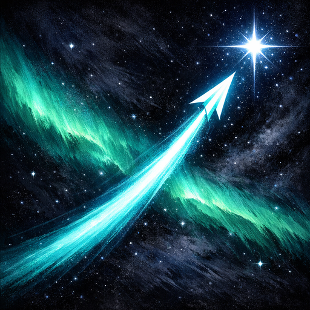

A first-person, on-rails space shooter with a Japanese ink-wash soul. Fly a craft of light through a painted sea of stars, drag to paint lock-ons over the incoming swarm, and release a fan of homing light-arrows that chain through the whole cluster at once — the bigger the lock, the bigger the volley.

Key art
Sectors of the Star Sea
🌌
One flight, six sectors — each with its own palette, hazards and rhythm: launch, the nebula, the asteroid belt, the comet field, the aurora, and the deep. Across short tracks bundled by constellation and an endless meteor storm, the star-sea never stops rushing toward you.
How to Play
🏹
Paint, release, and dodge — all while the star-sea races past. You choose what to lock and when to fire; the homing light-arrows do the rest.
Drag across the screen to paint lock-ons over the meteors and drones streaming toward you.
Lock as many targets as you can before you fire — the bigger the lock, the bigger the volley.
Release to loose a fan of homing light-arrows that chain through every locked target at once.
Dodge the debris you can't shoot, gather star-ore to upgrade at the Dock, and ride the overdrive.
Highlights
✨
First-person, on-rails flight with a genuine sense of speed
Paint-to-lock, release-to-fire — you choose every shot, never an auto-fire
A living ink-wash night sky lit by aurora — hand-tuned, not another neon starfield
Six sectors of short tracks bundled by constellation, plus an endless meteor storm
Combos climb a half-step in pitch, so a good run sounds like a rising chord; in 12 languages